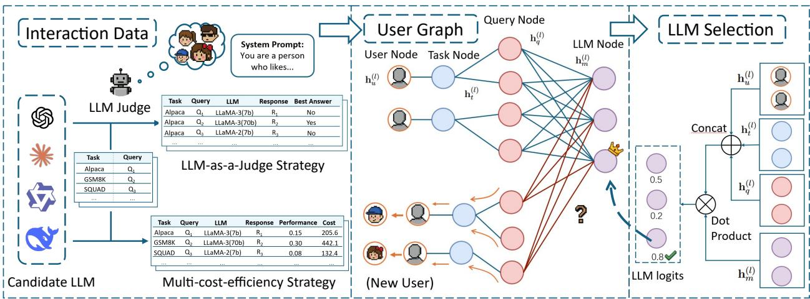
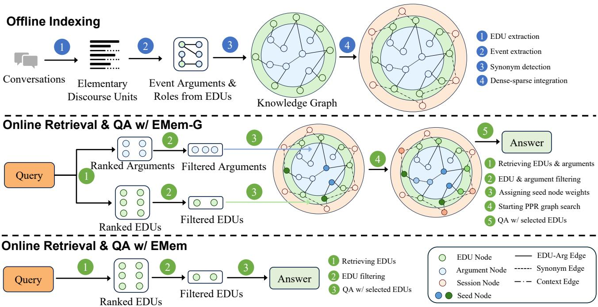

微观深度解读
为您精选了 6 篇高质量 AI 论文的深度解析
#1
树基不变内核
大型语言模型
张量并行
推理非确定性
强化学习训练
简介：本文提出了一种树基不变内核（TBIK），解决了大型语言模型（LLM）在不同张量并行（TP）大小下的推理非确定性问题。通过统一计算和归约顺序，TBIK确保在各种系统配置下实现逐位一致的输出，从而提高了强化学习训练的稳定性和结果的可复现性。实验结果表明，该方法有效消除了训练与推理之间的匹配问题。

#2
个性化大型语言模型
图神经网络
用户偏好建模
异构图
选择框架
简介：本文提出了**PersonalizedRouter**，一个基于图神经网络的个性化大型语言模型（LLM）选择框架。该方法通过构建异构图，利用用户交互数据学习个性化偏好，解决了现有选择方法无法适应多样化用户需求的问题。实验结果显示，PersonalizedRouter在性能和适应性上显著优于现有方法，且具备强大的泛化能力。

#3
大型语言模型
葡萄牙语
性能评估
基准测试
低资源语言
简介：本文提出了PoETa v2基准，系统评估葡萄牙语大型语言模型（LLMs）的性能。通过涵盖44个任务，分析了模型规模、计算投资和语言适应性对性能的影响，揭示了与英语任务的性能差距。研究为葡萄牙语LLMs的发展提供了重要的基准和方法论，推动了低资源语言的研究。

#4
大型语言模型
情感分析
南非语言
社交媒体
社会挑战
简介：本文提出了一种利用大型语言模型（LLMs）进行南非多语言社交媒体情感分析的方法，旨在帮助政府识别社会挑战。通过融合多种LLM的输出，情感分类准确率显著提高，错误率降至1%以下。这一方法填补了南非低资源语言情感分析的研究空白，为政策制定提供了可靠的数据支持。

#5
自然语言编程
计算思维
教育改革
人机协作
批判性思维
简介：本文探讨了自然语言编程的兴起如何改变软件开发和教育，提出计算思维的商品化将影响计算机科学和数据科学课程。作者建议重构教育体系，强调与AI协作、批判性思维和问题解决能力的重要性，以培养适应未来的劳动力。通过案例研究和理论分析，论文为教育改革和人类与AI的协作模式提供了实践指导。

#6
对话记忆
大语言模型
信息连贯性
异构图
基本话语单元
简介：本文提出了一种基于事件的对话记忆框架EMem及其图结构变体EMem-G，旨在解决大语言模型在长期对话中保持信息连贯性的问题。通过将对话历史分解为基本话语单元（EDUs）并组织成异构图，该方法有效支持信息检索和推理，实验结果显示其在LoCoMo和LongMemEval$_S$基准上超越了传统方法。
